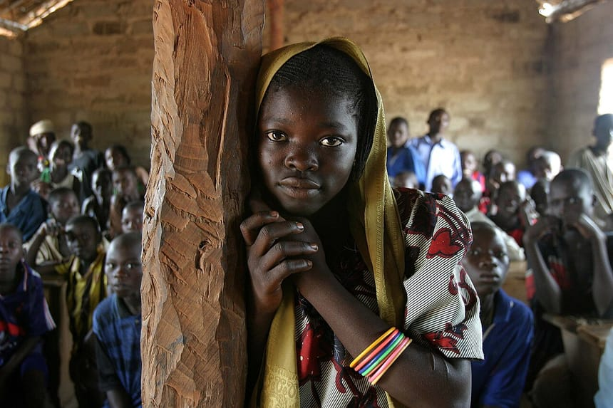

La municipalité a doté les établissements scolaires de la ville en matériel pédagogique pour soutenir la réussite des élèves : près de 1 200 kits ont été distribués dans 8 écoles.
Cahiers, manuels, stylos, ardoises et matériel de géométrie ont été remis aux directions d'écoles primaires et de collèges, avec une attention particulière pour les familles les plus modestes. L'opération vise à réduire les inégalités de départ et à encourager l'assiduité en classe.
Soutenir l'école publique
Au-delà des fournitures, la commune participe à l'entretien des bâtiments scolaires et à l'équipement des salles de classe. Plusieurs établissements ont vu leurs toitures et leurs tableaux rénovés au cours de l'année.
La mairie remercie les enseignants et les associations de parents d'élèves pour leur mobilisation, et réaffirme que l'éducation de la jeunesse demeure l'une des grandes priorités de son action.